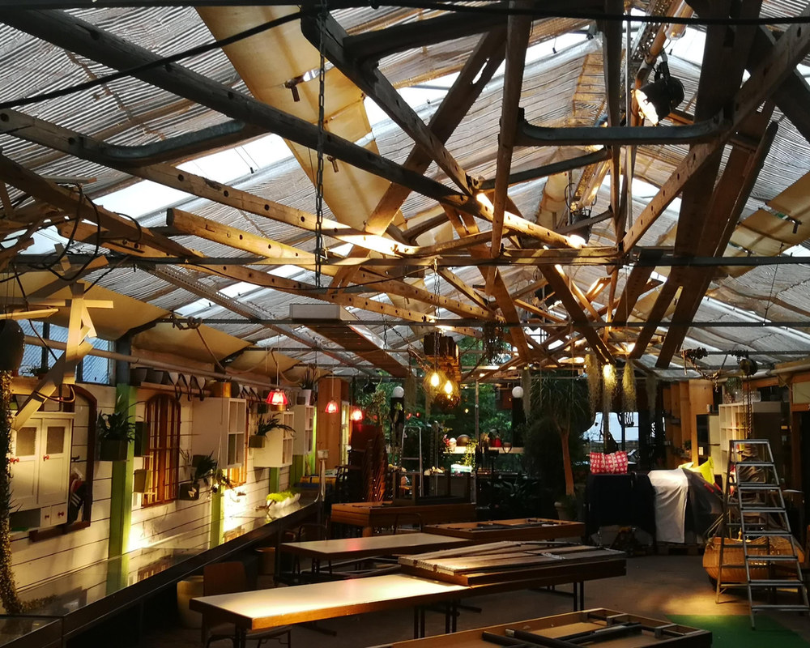

Gärtnerei in Dettenhausen – mehr als ein Blumenladen
Als Endverkaufsgärtnerei ziehen und verkaufen wir Pflanzen direkt – kurze Wege, frische Ware, ehrliche Beratung.
Was ist eigentlich eine Endverkaufsgärtnerei? Ganz einfach: Wir verkaufen Pflanzen nicht nur, wir kennen sie. Vieles wächst bei uns vor Ort oder kommt aus kurzer Distanz – das bedeutet frische Ware und Beratung von jemandem, der weiß, wovon er spricht.
Unser Sortiment – je nach Jahreszeit
- Stauden & mehrjährige Pflanzen
- Beet- & Balkonpflanzen für die Saison
- Gehölze aus eigener Baumschule
- Gemüsejungpflanzen, Kräuter & Beerenobst
- Zimmerpflanzen & Pflanzen für den Innenraum
Weil sich das Angebot mit den Jahreszeiten ändert, lohnt sich der Besuch immer wieder neu – im Frühjahr die Jungpflanzen, im Sommer die Stauden, im Herbst die Zwiebeln und winterharten Gehölze.
Persönliche Beratung inklusive
Welcher Standort, welche Pflege, was passt zusammen? Wir nehmen uns Zeit für Ihre Fragen – ob für den Balkonkasten, das neue Beet oder die Grabbepflanzung. Kommen Sie vorbei, am besten mit ein paar Fotos Ihres Gartens.
Häufige Fragen
Wann ist die beste Zeit zum Pflanzen?
Das hängt von der Pflanze ab – wir beraten Sie gern, was gerade Saison hat und wann sich das Pflanzen lohnt.
Kann ich mich auch nur beraten lassen?
Selbstverständlich. Bringen Sie gern Fotos Ihres Gartens oder Balkons mit, dann finden wir gemeinsam die passenden Pflanzen.